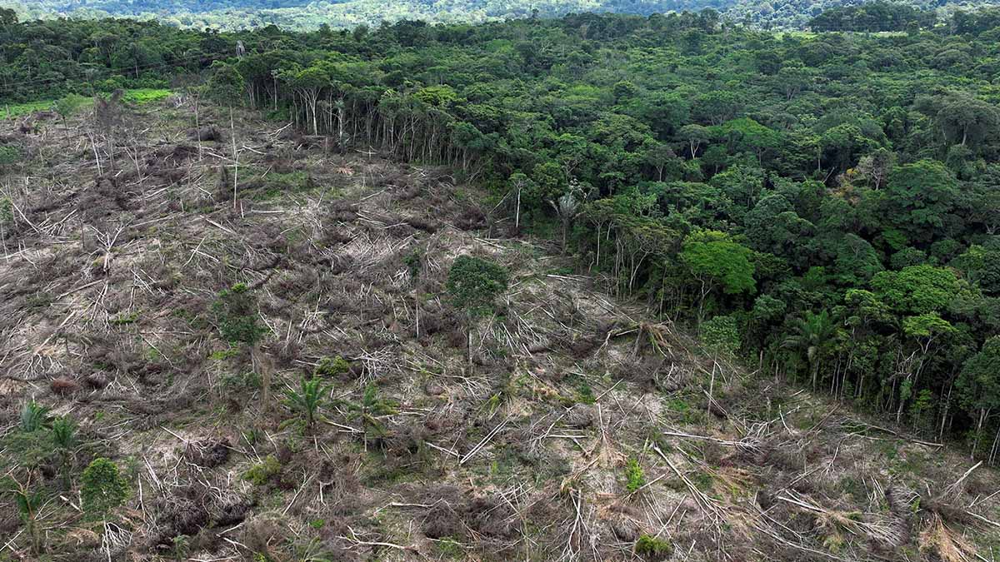

PROBLEMAS AMBIENTALES
¿Que Es El Cambio Climatico?
El cambio climático es la alteración del clima de la Tierra a largo plazo, causada principalmente por la actividad humana. Se produce por la emisión de gases de efecto invernadero como el dióxido de carbono (CO₂), que atrapan el calor en la atmósfera y aumentan la temperatura del planeta.
Este fenómeno provoca consecuencias como el calentamiento global, el derretimiento de los polos, sequías, huracanes más intensos y la pérdida de biodiversidad. Afecta al medio ambiente, la salud, la economía y la vida cotidiana.
Para combatirlo, es necesario usar energías limpias, plantar árboles, reducir la contaminación y cuidar los recursos naturales. Actuar ahora es clave para proteger el planeta.
¿Que Es La Deforestacion?
La deforestación es la eliminación o destrucción de bosques y selvas, generalmente causada por actividades humanas como la tala de árboles, la agricultura, la ganadería, la minería o la construcción de ciudades y carreteras.
Esta práctica reduce la cantidad de árboles en el planeta, lo que provoca pérdida de biodiversidad, erosión del suelo, menos oxígeno, más contaminación y aumento del cambio climático, ya que los árboles ayudan a absorber dióxido de carbono (CO₂).
Para combatir la deforestación es importante plantar árboles, proteger los bosques existentes, y usar los recursos naturales de forma responsable.
¿Cómo Afecta La Pérdida De Biodiversidad?
La pérdida de biodiversidad ocurre cuando desaparecen especies de animales, plantas y microorganismos. Esto afecta gravemente el equilibrio de los ecosistemas.
Cuando una especie se extingue, se rompe la cadena alimenticia y se alteran funciones esenciales como la polinización, la purificación del aire y el agua, el control de plagas y la fertilidad del suelo. Además, la pérdida de biodiversidad reduce la resistencia de los ecosistemas al cambio climático y a enfermedades.
También perjudica al ser humano, ya que dependemos de la naturaleza para obtener alimentos, medicinas, agua y materiales. Proteger la biodiversidad es vital para la salud del planeta y nuestro bienestar.
